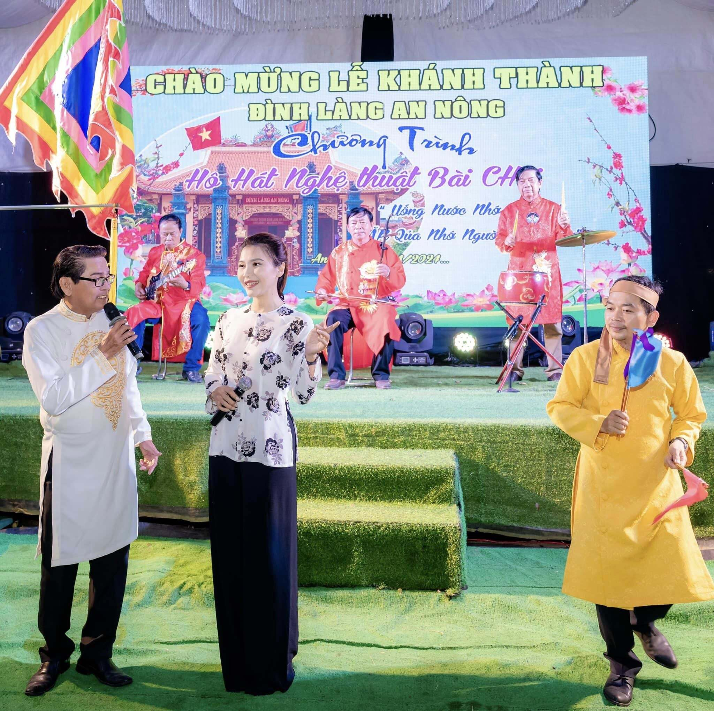
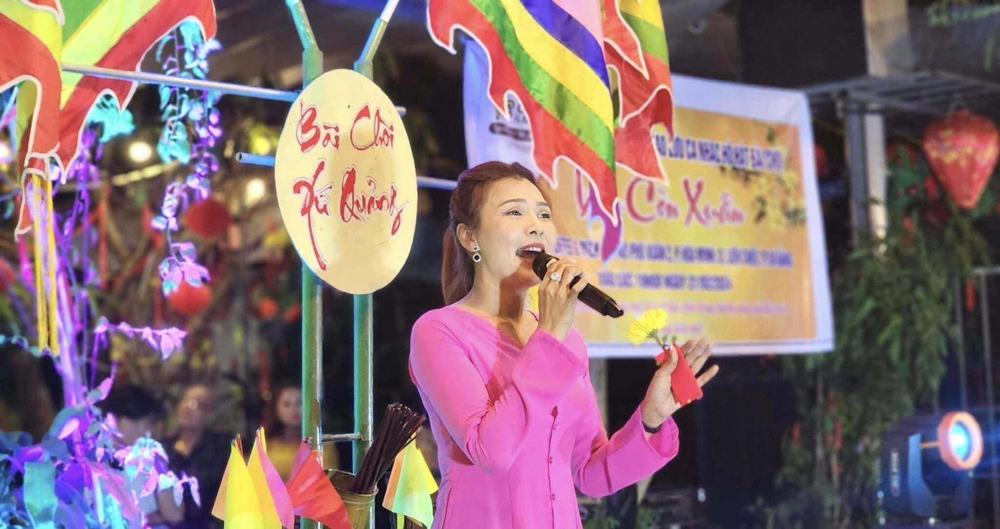
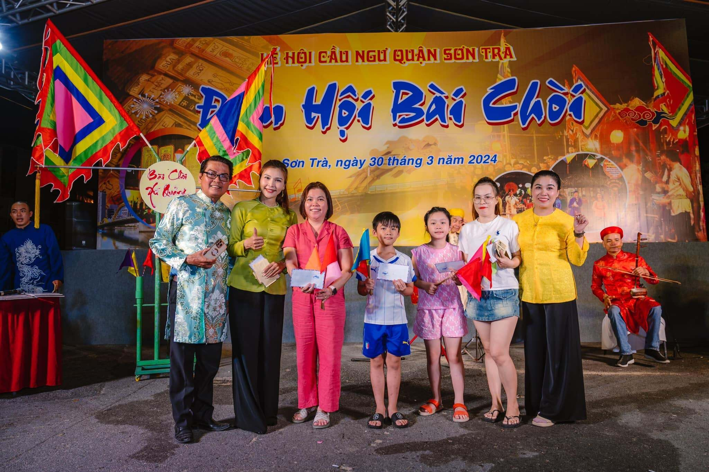

Các Làn Điệu Hát Bài Chòi
Các làn điệu cơ bản: xuân nữ cổ, xuân nữ mới, cổ bản, xàng xê cũ, xàng xê mới, hồ Quảng (hay còn gọi là hò Quảng). Ngoài ra có thể tiếp thu các làn điệu khác như :hò khoan ,hát ru, vọng kim lang, vè quảng lý thương nhau, hò giã vôi, hoa chúc. Các điệu lý như :lý hò hê, lý tình tang, lý vọng phu, lý vãi chài, vv... Dưới đây là một số làn điệu phổ biến trong trò chơi này:
Làn Điệu 1: Xuân Nữ Cổ
Xuân Nữ Cổ là một làn điệu phổ biến trong Hát Bài Chòi, mang đậm âm hưởng dân gian miền Trung. Làn điệu này có giai điệu vui tươi, dễ nhớ, thường được sử dụng trong các trò chơi giải trí.
Làn Điệu 2: Xuân Nữ Mới
Xuân Nữ Mới là một làn điệu có tiết tấu nhanh, mạnh mẽ, thường được sử dụng để tạo không khí sôi động cho các cuộc thi hát bài chòi. Đây là một trong những làn điệu có giai điệu khó quên nhất.
Làn Điệu 3: Cổ Bản
Cổ Bản mang đậm nét trữ tình, nhẹ nhàng, thường được hát trong các dịp lễ hội với những bài ca có nội dung nhẹ nhàng, sâu lắng.
Làn Điệu 4: Xàng Xê Cũ
Xàng Xê Cũ là làn điệu mang hơi thở của sự cổ kính, sâu sắc, thường được dùng trong các trò chơi hát bài chòi với những câu hát phức tạp hơn.
